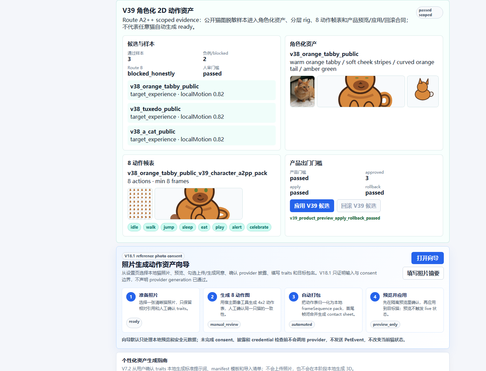
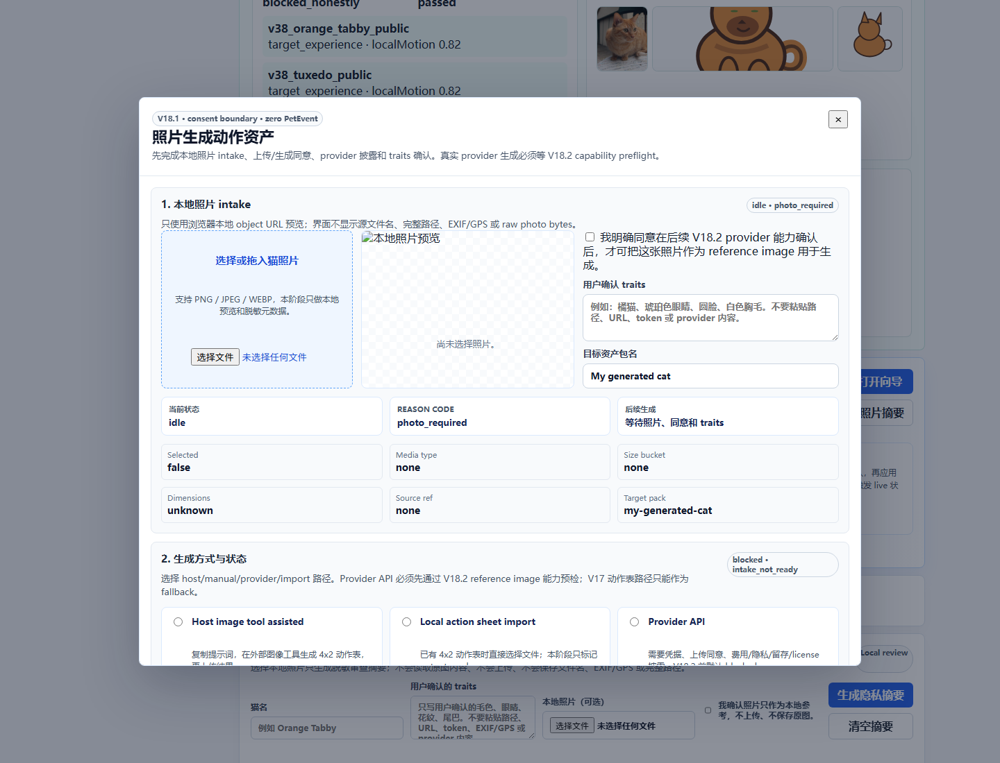
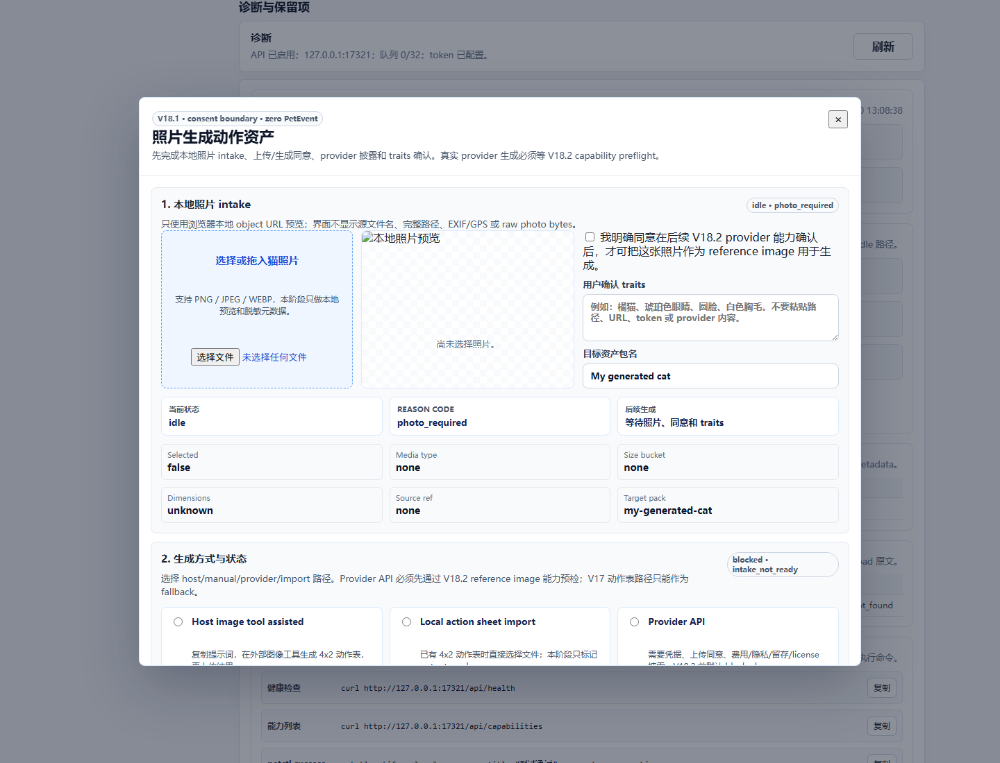
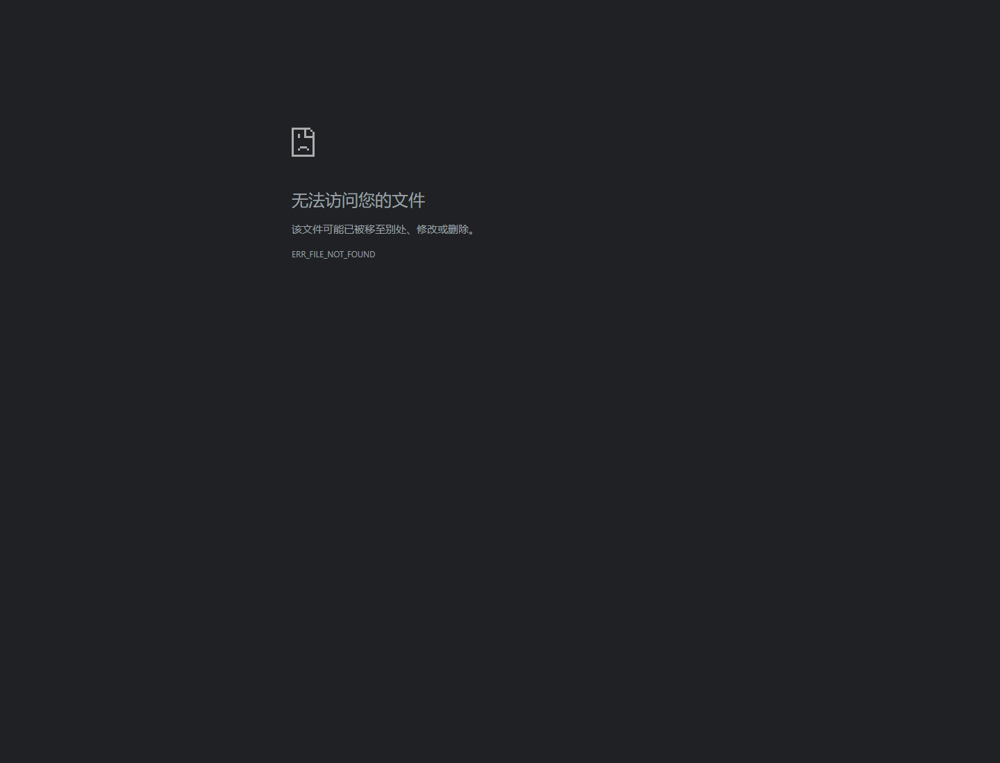
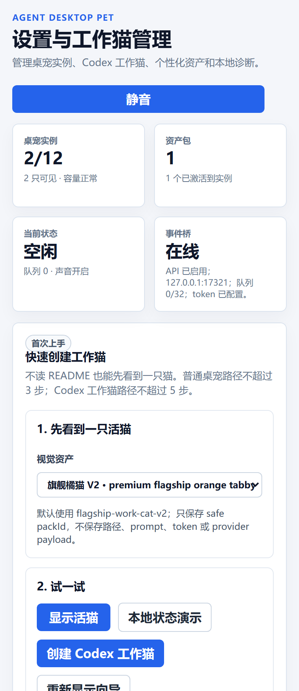

目标架构
V40 目标是无 WebUI/无 ComfyUI 的 Direct Local Runner 路线：安全照片样本进入本地候选生成，经过 V40 合同、视觉审查、归一化、产品预览/应用/回滚和最终 evidence gate。
本报告使用 Headless Chrome + CDP 采集截图，语言为中文，日期 2026-06-30。报告目的不是证明 V40 成功，而是证明当前项目真实可见路径、当前架构状态和 V40.3R2 失败门禁。
边界：Headless Chrome + Tauri mock UI acceptance. Native desktop overlay was not re-tested by this report; V40.3R2 image-to-action quality remains failed.
V40 目标是无 WebUI/无 ComfyUI 的 Direct Local Runner 路线：安全照片样本进入本地候选生成，经过 V40 合同、视觉审查、归一化、产品预览/应用/回滚和最终 evidence gate。
V40.1A/V40.2 建立了 runner 和 no-WebUI 合同；V40.3/V40.3R/V40.3R2 均未得到视觉通过候选。当前产品体验仍应看作 V39 fallback 与现有设置页能力。
Headless 截图证明前端路径和失败候选证据可见；不证明 native overlay、provider、任意猫自动生成、生产发布、Windows/cross-platform readiness。
| 命令 | 结果 | 摘要 |
|---|---|---|
pet-protocol build |
passed | TypeScript check passed; exit 0; 4s |
desktop build |
passed | frontend bundle built; TypeScript check passed; exit 0; 12s |
petctl build |
passed | TypeScript check passed; exit 0; 4s |
pet-mcp build |
passed | TypeScript check passed; exit 0; 4s |
desktop test |
passed | tests 356, pass 356, fail 0; exit 0; 4s |
desktop check |
passed | TypeScript check passed; exit 0; 7s |
petctl test |
passed | tests 71, pass 71, fail 0; exit 0; 6s |
V30 semantic animation gate |
passed | V30 semantic gate passed; exit 0; 1s |
V39.8 final gate smoke |
passed | V39 scoped final gate passed; exit 0; 2s |
V40.3R2 default repair smoke |
expected-failed | completed with recorded non-pass status; exit 1; 1s |
V40.3R2 stylized repair smoke |
expected-failed | completed with recorded non-pass status; exit 1; 1s |
desktop native tauri bundle |
expected-failed | native bundle blocked by unsupported Tauri bundle value in current environment; exit 2; 1s |
这些截图来自 headless Chrome，不会弹出截图窗口。最后打开本报告才会产生可见浏览器窗口。







Critical · V40.3R2 真实候选视觉失败，不能进入 V40.4，不能声明图生动作资产 ready。
Medium · Headless UI 使用 Tauri mock，证明前端路径可渲染，不证明原生 overlay、托盘、窗口层级或点击穿透。
Medium · Tauri release build 在当前 WSL/Windows cargo 路径组合下仍 blocked；前端和 TypeScript 包已构建。
Medium · 当前可体验产品仍依赖 V39 fallback/现有内置资产，用户不会看到 V40 高质量动作资产结果。
Low · 移动视口截图用于布局检查，不覆盖触屏真实设备手势和系统缩放差异。
| 检查项 | 结果 |
|---|---|
| 设置页标题 | 设置与工作猫管理 |
| 导航链接数 | 6 |
| V39 面板存在 | yes |
| 照片 2D 向导打开 | yes |
| 诊断区可见 | yes |
| 禁用 ready 声明语境 | forbidden/not-ready context |
当前项目可以人工体验前端设置页、资产/图库入口、照片 2D 向导入口、诊断区和现有桌宠运行路径；不能体验 V40 高质量图生动作资产成功流。
V40.3R2 的真实生成候选已作为失败证据展示。它们不应被应用到产品，不应进入 V40.4，也不应被宣传为用户会喜欢的动作资产。